Capítulo 6 Gráficos com ggplot2
O pacote ggplot214 foi criado em 2007 por Hadley Wickham com base no livro “The Grammar of Graphics” de Leland Wilkinson15 de 1999. A ideia é que a confecção de gráficos seja realizada a partir de camadas e que o gráfico seja lido pelo R como um objeto (e não como uma imagem como nos pacotes básicos do R). Assim, esse objeto (gráfico) pode ser reutilizado como qualquer outro objeto (vetores, matrizes, data.frames, etc) do R.
Além disso, até hoje já foram cridas mais de 60 extensões para o ggplot2 que podem ser visualizadas no site ggplot2 extensions.
Para aprendermos elementos básicos do ggplot2 iremos utilizar os pacotes ggplot2, dplyr e gapminder. O pacote gapminder possui o banco de dados gapminder que iremos utilizar daqui pra frente.
Bom, vamos ver como é esse banco que iremos trabalhar:
## country continent year lifeExp
## Afghanistan: 12 Africa :624 Min. :1952 Min. :23.60
## Albania : 12 Americas:300 1st Qu.:1966 1st Qu.:48.20
## Algeria : 12 Asia :396 Median :1980 Median :60.71
## Angola : 12 Europe :360 Mean :1980 Mean :59.47
## Argentina : 12 Oceania : 24 3rd Qu.:1993 3rd Qu.:70.85
## Australia : 12 Max. :2007 Max. :82.60
## (Other) :1632
## pop gdpPercap
## Min. :6.001e+04 Min. : 241.2
## 1st Qu.:2.794e+06 1st Qu.: 1202.1
## Median :7.024e+06 Median : 3531.8
## Mean :2.960e+07 Mean : 7215.3
## 3rd Qu.:1.959e+07 3rd Qu.: 9325.5
## Max. :1.319e+09 Max. :113523.1
## ## tibble [1,704 × 6] (S3: tbl_df/tbl/data.frame)
## $ country : Factor w/ 142 levels "Afghanistan",..: 1 1 1 1 1 1 1 1 1 1 ...
## $ continent: Factor w/ 5 levels "Africa","Americas",..: 3 3 3 3 3 3 3 3 3 3 ...
## $ year : int [1:1704] 1952 1957 1962 1967 1972 1977 1982 1987 1992 1997 ...
## $ lifeExp : num [1:1704] 28.8 30.3 32 34 36.1 ...
## $ pop : int [1:1704] 8425333 9240934 10267083 11537966 13079460 14880372 12881816 13867957 16317921 22227415 ...
## $ gdpPercap: num [1:1704] 779 821 853 836 740 ...Certo! Vamos criar um banco apenas com os anos relacionados à Argentina e um outro relacionado às entradas do ano 1962:
6.1 Camadas básicas do ggplot2
Para criarmos qualquer gráfico com o ggplot2 precisamos obrigatóriamente de três camadas:
- data - onde indicamos nossos dados;
- aesthetics (aes) - onde indicamos as variáveis;
- geometries (geom) - onde indicamos o tipo de geometria que desejamos para visualizar os gráficos
Assim, para criarmos um gráfico de dispersão entre a variável gdpPercap e lifeExp com os dados da Argentina fazemos:
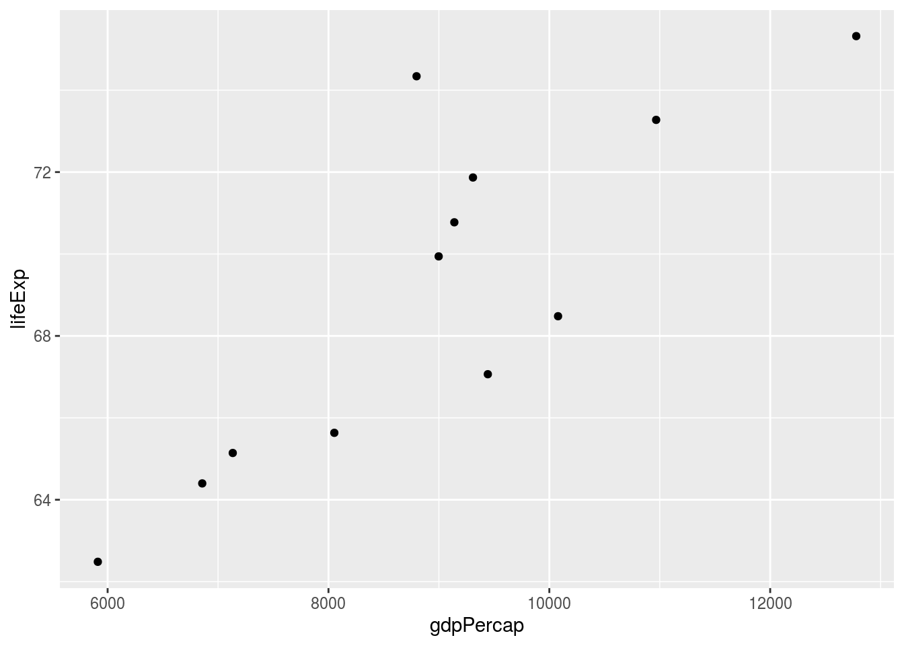
Teste, por exemplo, criar um gráfico sem a camada
geom_point(). O que acontece?
Podemos criar um gráfico de dispersão dos dados do anos de 1962 (com as variáveis gdpPercap e lifeExp) mas para auxiliar na apresentação e melhorar a análise podemos colorir os pontos (cada país, no caso) pela varíavel categórica dos continentes (continent). Para isso, adicionamos o argumento colour dentro da nossa camada aes(), como a seguir:
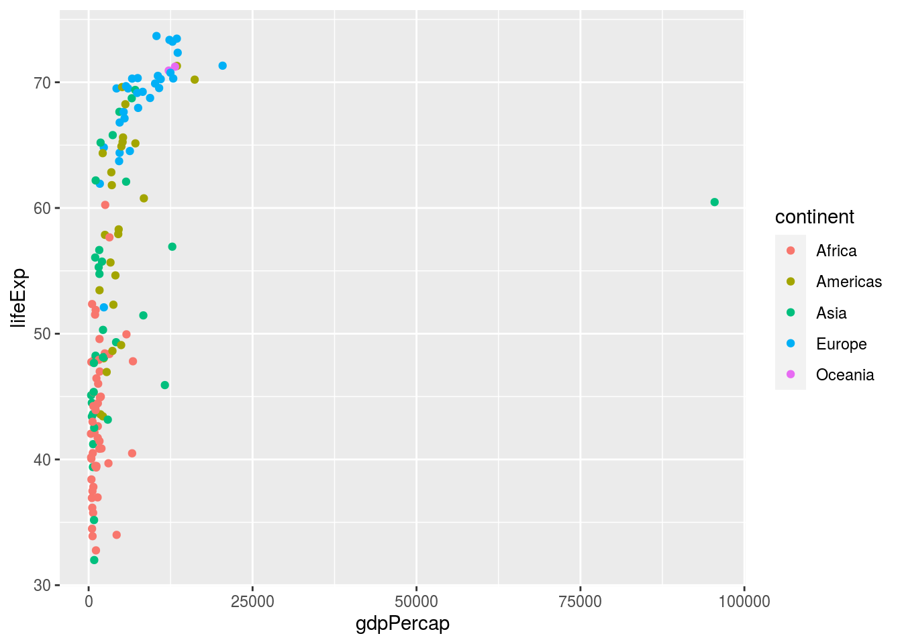
Da mesma forma que podemos definir a cor por outras variáveis também podemos definir outros atributos do gráfico, como a forma dos pontos (shape) e o tamanho dos mesmos (size).
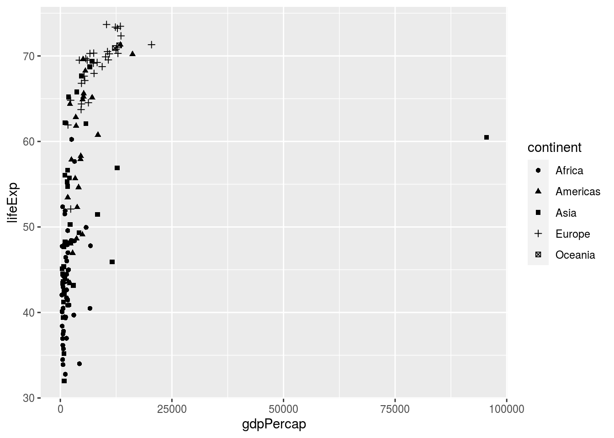
pop no gráfico colorido por continente .
Quando adicionamos um atributo dentro da camada aesthetics (aes) indicamos uma categoria. Se, por outro lado, queremos mudar a cor (ou outro atributo) de todos os pontos (sem distinção), devemos alterar no argumento color dentro da camada geométrica (geom_point, no caso). Assim como outras alterações relacionadas a todas os pontos por igual:
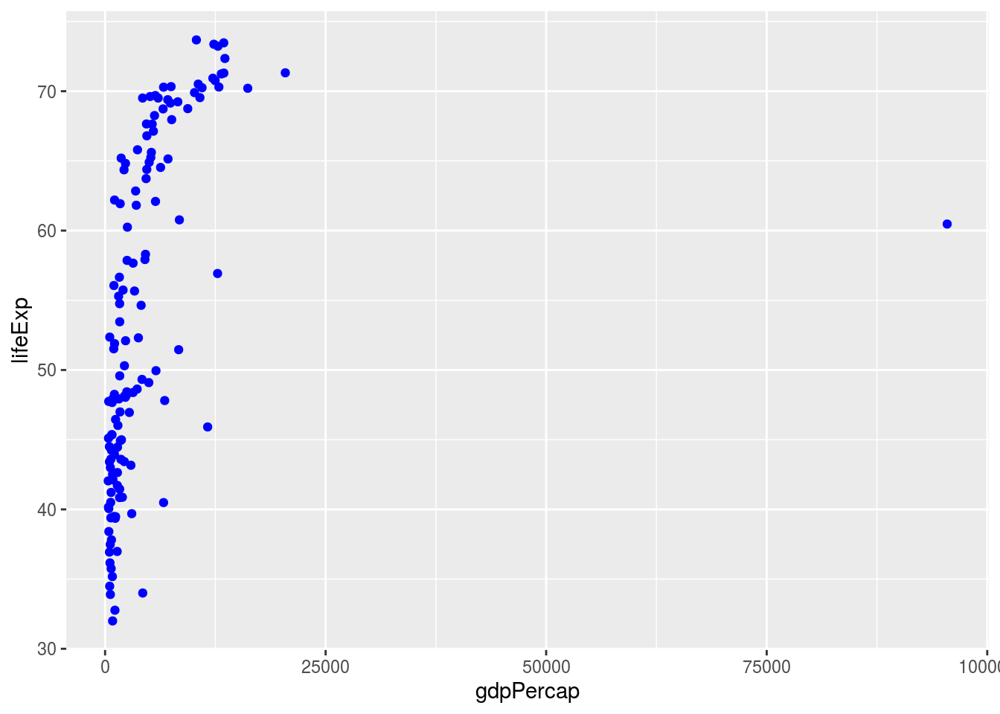
Outras alterações que podem ser feitas na camada geom_point():
- alpha - a transparência dos pontos (de 0 a 1)
- shape - as formas dos pontos (verificar documentação para possibilidades)
- size - tamanho dos pontos
- fill - preenchimento dos pontos
Podemos ainda adicionar legendas no nome dos casos. Para isso precisamos adicionar uma camada geom_text() e ainda o argumento label dentro da camada aes():
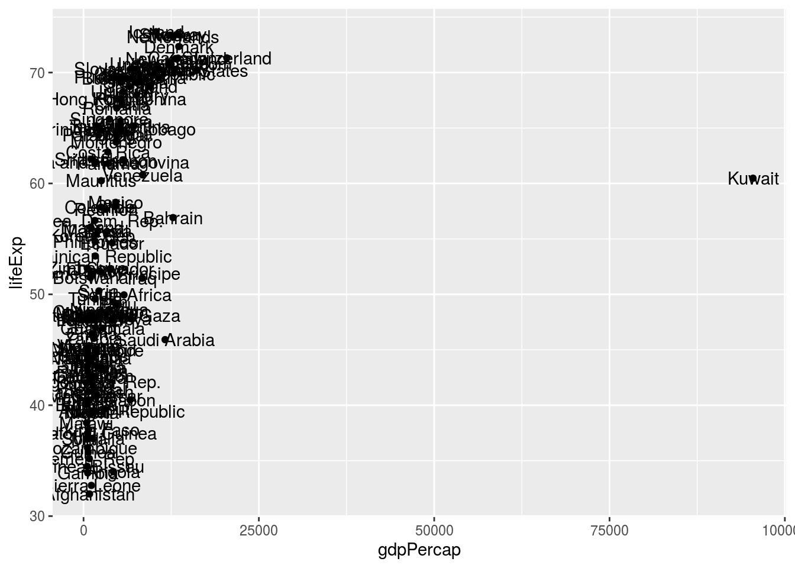
Como temos muitos nomes de países no nosso banco, as legendas ficam sobrepostas. Há algumas configurações e extensões para o ggplot2 que auxiliam nesses casos.
6.2 Camadas opcionais
Além das três camadas obrigatórias ainda podemos utilizar mais quatro camadas opcionais:
- facets - gerar gráficos facetados por categorias
- statistics - medidas estatísticas anexadas nos gráficos
- coordinates - alterações nas coordenadas dos gráficos
- themes - alterações na aparência do gráfico (como um todo)
Iremos ver aqui alguns exemplos de cada uma dessas camadas.
Podemos utilizar a camada facets_grid() para dividir nosso gráfico diferentes gráficos para cada continente (variável categórica):
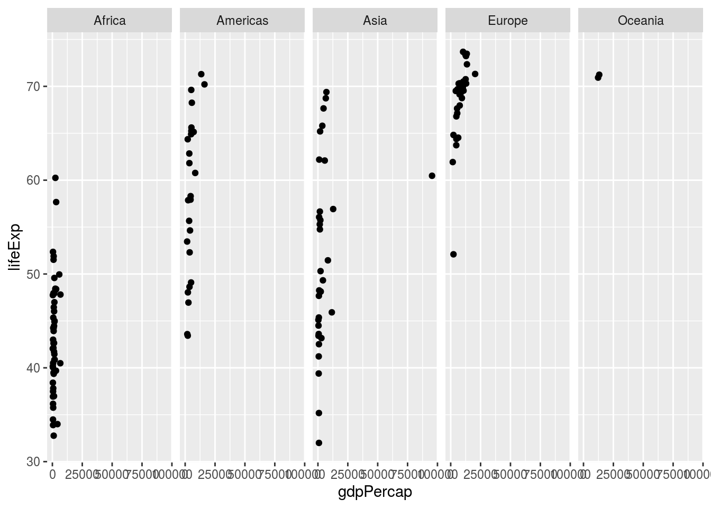
Podemos também adicionar camadas com medidas estatísticas, na camada statistics. Como, por exemplo, adicionar uma linha de regressão no gráfico:
## `geom_smooth()` using method = 'loess' and formula 'y ~ x'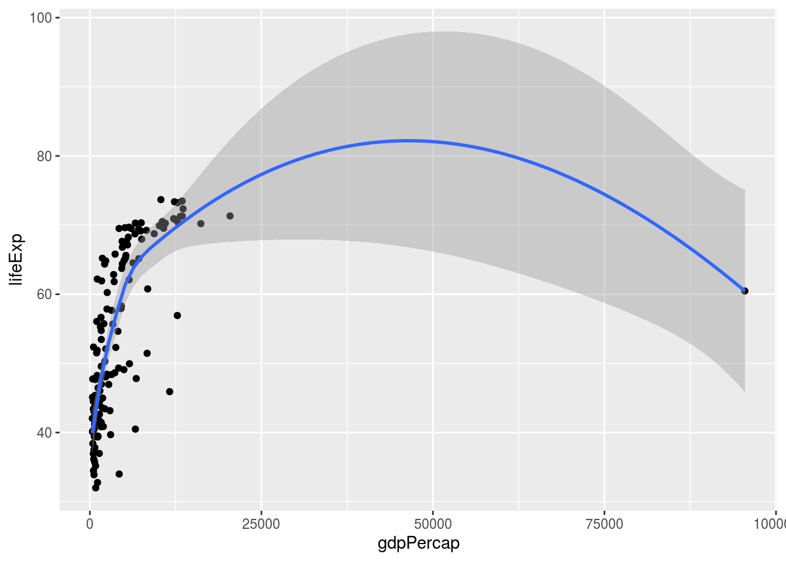
é possível adicionar outras medidas, como médias, densidades, etc.
A camada coordinates permite fazer alterações nos eixos das coordenadas. Podemos, por exemplo, alterar os limites dos eixos x e y. A seguir, o mesmo gráfico que trabalhamos anteriormente mas com o eixo y indo de 20 a 80:
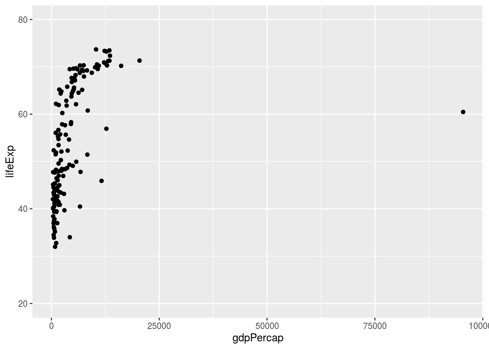
é possível também, transformar o plano do gráfico. Por exemplo, com a função coord_polar() transformamos o gráfico do plano cartesiano utilizamos um plano circular (como os círculos polares da Terra):
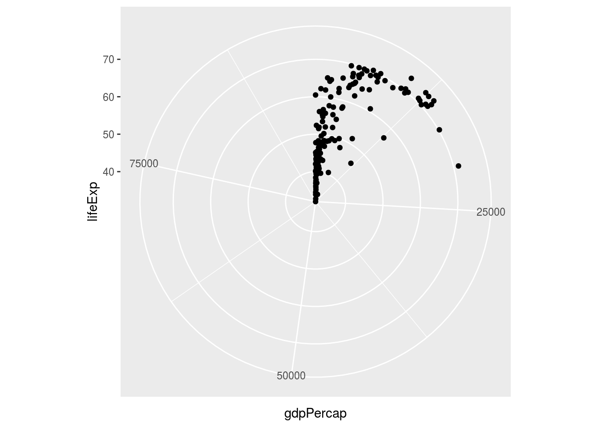
Por fim, a camada themes caracteriza-se por alterções nos elementos “não-dados” do gráfico. Por exemplo, se temos um gráfico com as legendas e título (aproveitamos e já aprendemos como fazer a legenda e o título do gráfico):
pib62 <- ggplot(ano62, aes(x = gdpPercap, y = lifeExp, colour = continent)) +
geom_point() +
coord_cartesian(ylim = c(20, 80)) +
labs(
x = "Pib per capita",
y = "Expectativa de vida",
colour = "Continentes",
title = "Relação expectativa de vida e PIB dos países em 1962"
) +
scale_colour_brewer(palette = "Set2")
pib62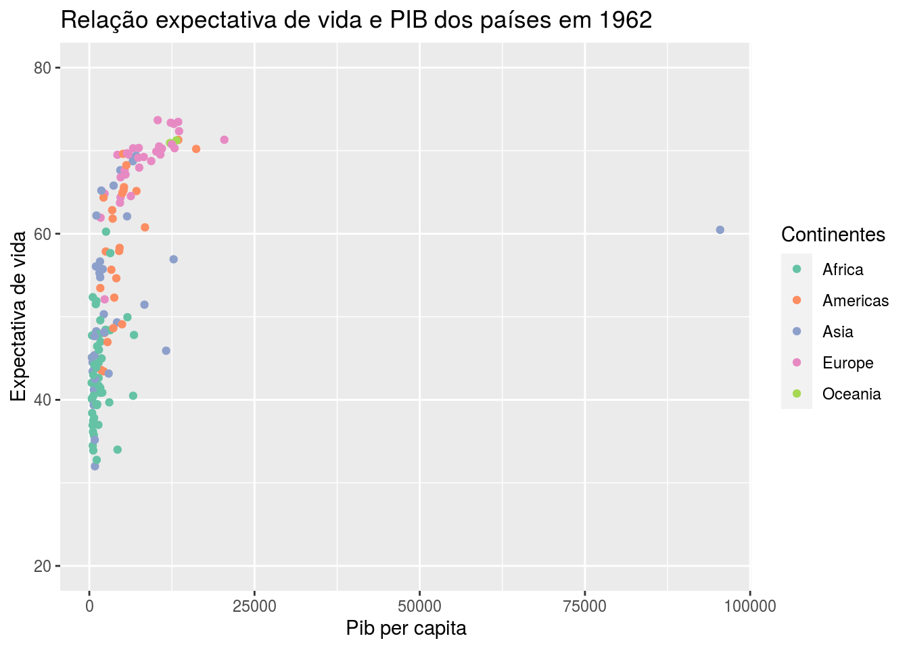
No gráfico anterior, ainda alteramos a paleta de cores do gráfico com a função
scale_colour_brewer().
Agora queremos fazer alterações estéticas no gráfico, como o plano de fundo, a localização do título, o tamanho e tipo da fonte, etc. A seguir, um exemplo de alteração no tema (theme_dark()) e nos elementos do gráfico (title, legend, axis e panel.grid):
pib62 +
theme_dark() +
theme(
plot.title = element_text(face = "bold", size = 12),
legend.background = element_rect(fill = "white", size = 4, colour = "white"),
legend.justification = c(0, 1),
axis.ticks = element_line(colour = "grey70", size = 0.2),
panel.grid.major = element_line(colour = "grey70", size = 0.2),
panel.grid.minor = element_blank()
) 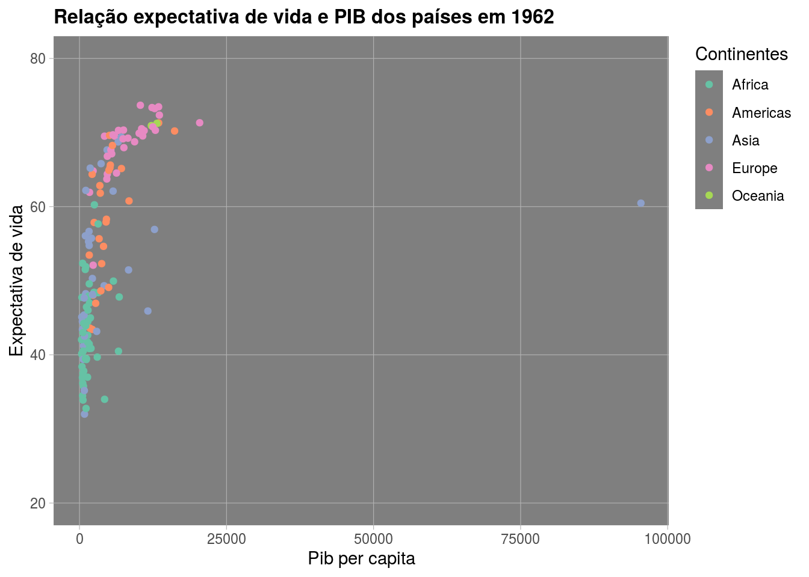
Para outras configurações de tema, consulte: Chapter 15, ggplot2: Elegant graphics for data analysis.
6.3 Outros tipos de gráficos
Até aqui vimos os gráficos de dispersão, mas o ggplo2 nos permite fazer uma infinidade de tipos de gráficos (inclusive mapas!). Assim, iremos deixar de usar a camada geom_point() e passaremos a usar camadas correspondentes para cada tipo de gráfico. Iremos aqui ver algumas possibilidades, mas vendo apenas suas funcionalidades básicas, para outras alterações é necessário consultar a documentação de cada tipo de gráfico ou os livros de ggplot2 recomendados.
6.3.1 Histogramas e barras
Para os histogramas utilizamos a camada geom_histogram(). Por padrão a função de criação do gráfico utiliza a posição das barras no método stacked, mas pode ser alterado o argumento position (conforme o gráfico seguinte).
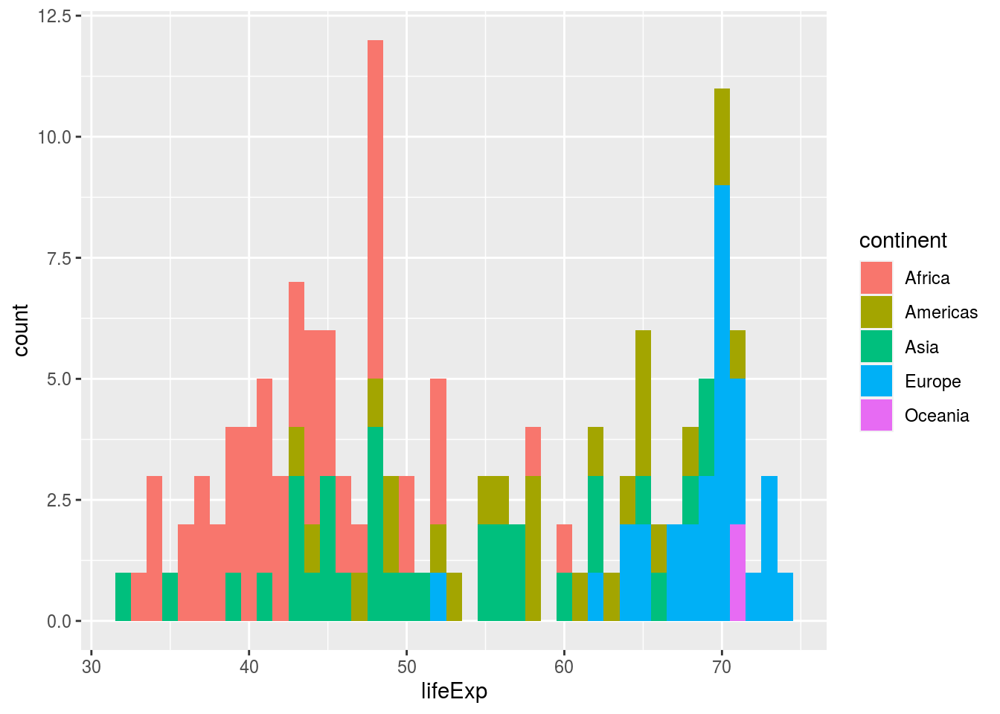
Gráfico alterando a posição das barras. O argumento binwidth altera o tamanho das barras:
ggplot(ano62, aes(lifeExp, fill = continent)) +
geom_histogram(binwidth = 0.5, position = "identity")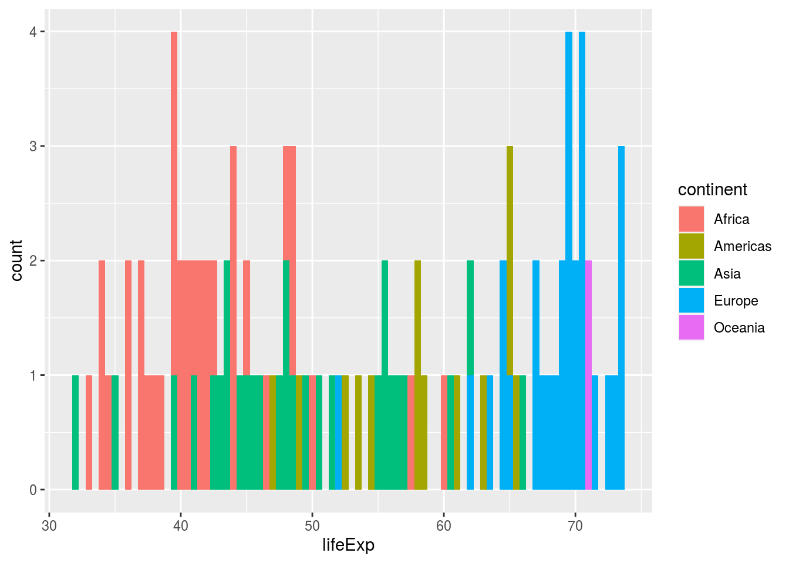
Para realizar os gráficos de barra utilizaremos o banco mtcars16 , que possui informações sobre 32 modelos de carros (1973-74). O primeiro gráfico que faremos é da variável cyl (número de cilindros) com as corres das barras dividas entre a varia’vel categórica am (tipo de transmissão do carro - 0 para automática e 1 para manual).
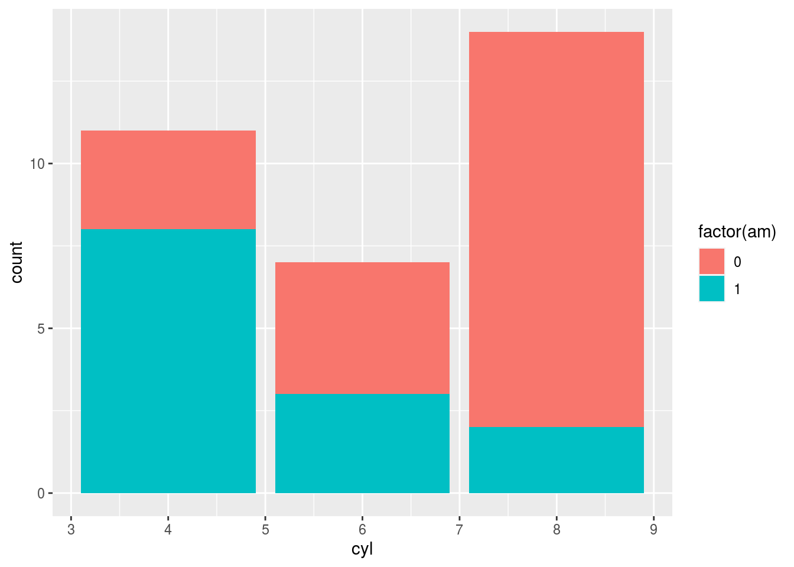
O argumento position vem como padrão o modelo stack na função geom_bar(), podemos alterá-lo:
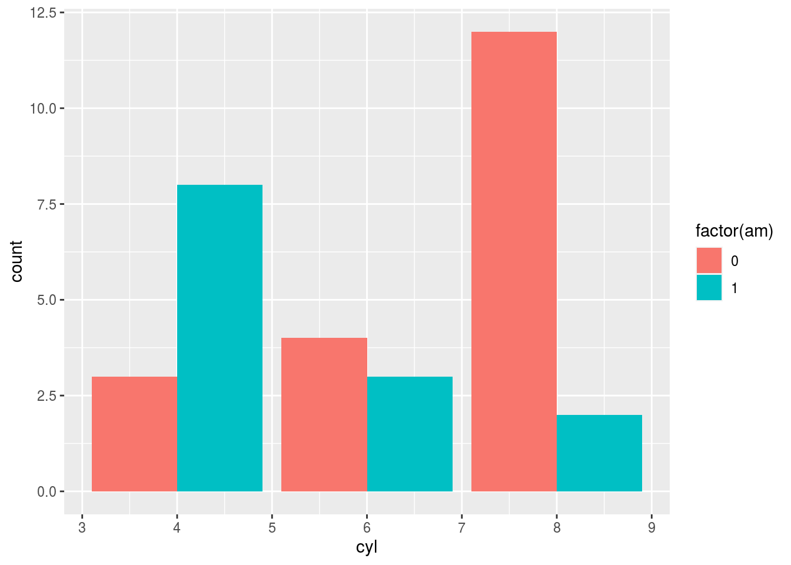
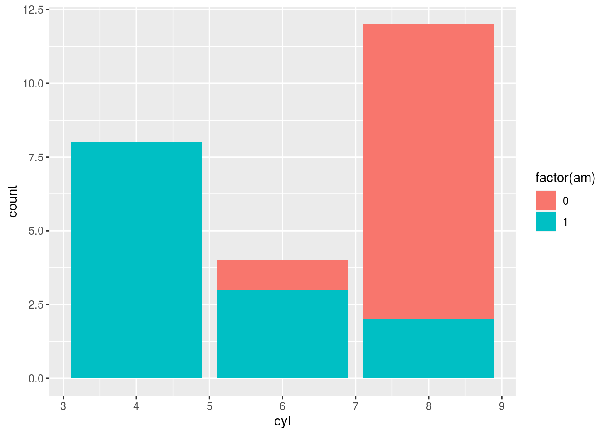
6.3.2 Polígonos
Podemos utilizar a função geom_polygon() para criar graficos de polígonos. é possível criar um gráfico de polígonos apenas com coordenadas cartesianas, como a seguir17:
pol <- data.frame(x=c(1,2,3, 3,4,5), y=c(1,1,2, 2,2,3), t=c("a", "a", "a", "b", "b", "b"))
ggplot(pol) +
geom_polygon(mapping=aes(x=x, y=y, group=t, fill = t)) +
geom_point(data=pol, aes(x=x, y=y, color=t)) 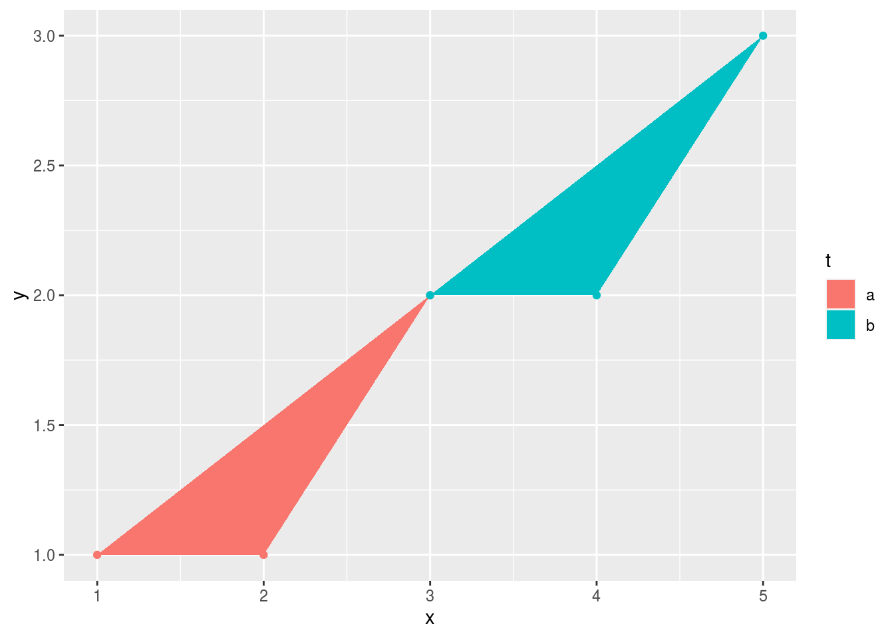
Porém, também podemos utilizar nossos dados para fazer esse tipo de gráfico:
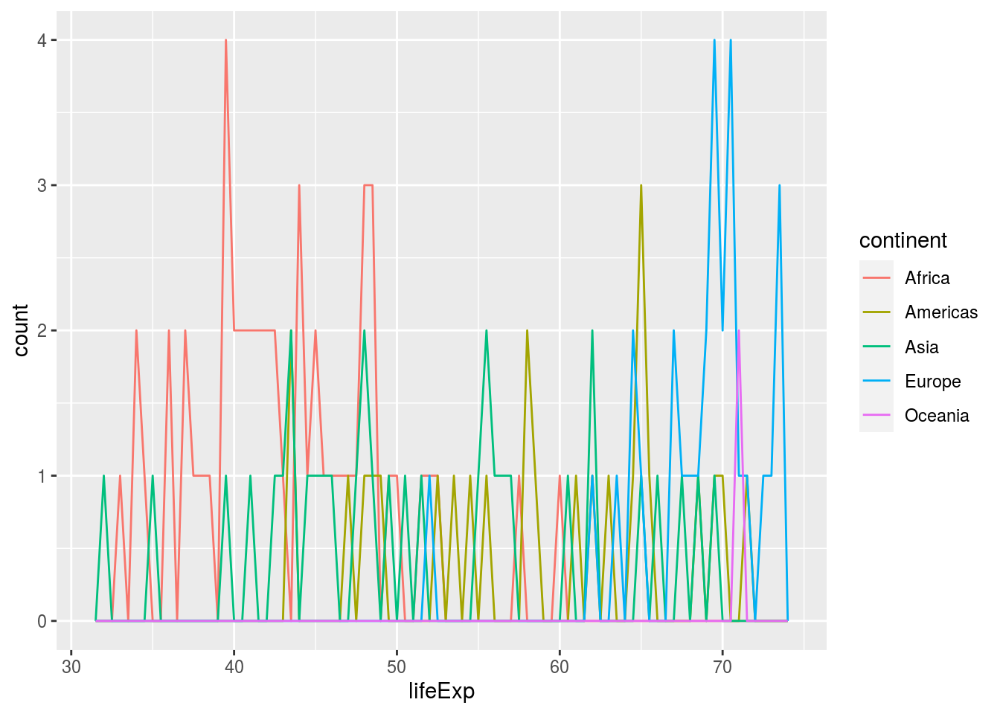
6.3.3 Boxplot
Para criamos os boxplots utilizamos a função geom_boxplot(). Podemos criar um gráfico com boxplots para cada continente:
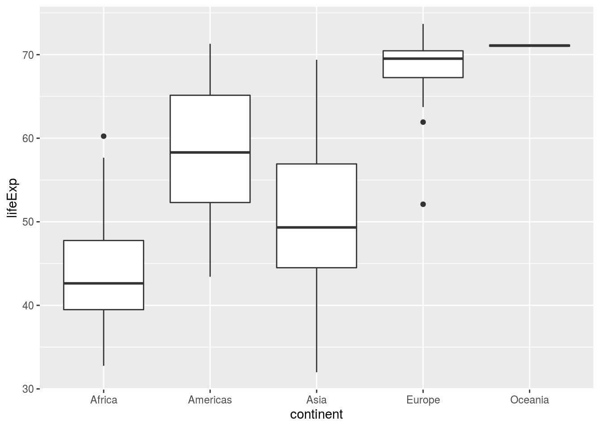
Para alterar a cor dos outliers e do preenchimento do gráfico alteramos dentro da camada geom:
ggplot(ano62, aes(continent, lifeExp)) +
geom_boxplot(outlier.color = "red", fill = "blue", show.legend = FALSE) 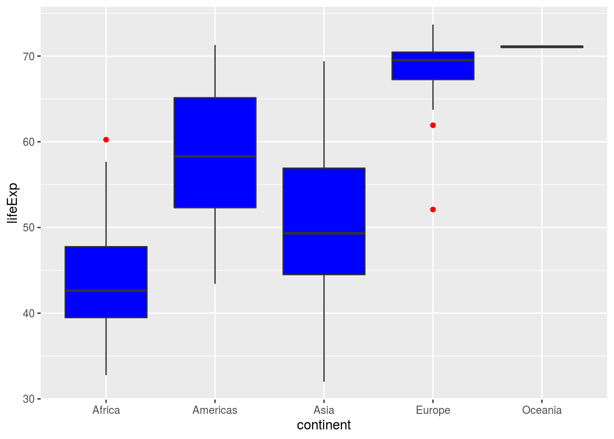
H. Wickham. ggplot2: Elegant Graphics for Data Analysis. Springer-Verlag New York, 2016.↩︎
L. Wilkinson. The Grammar of Graphics. Springer-Verlag New York, 1999.↩︎
https://www.rdocumentation.org/packages/datasets/versions/3.4.3/topics/mtcars↩︎
Adaptado de: http://sape.inf.usi.ch/quick-reference/ggplot2/geom_polygon↩︎